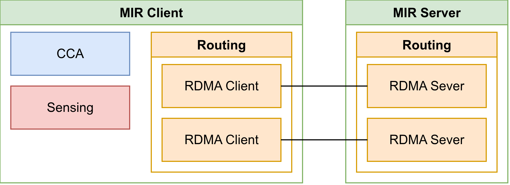
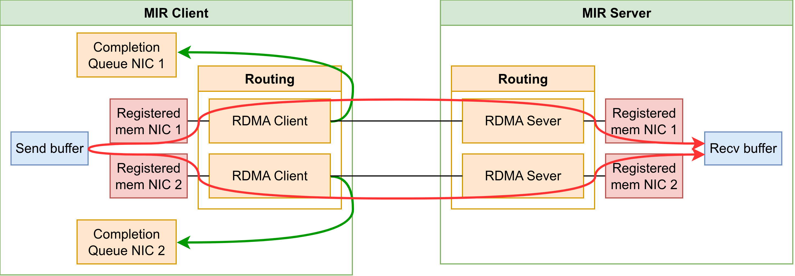
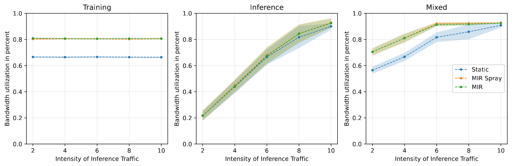

Overview
Existing machine learning (ML) cluster nodes often have multiple network interface cards (NICs) to increase inter-host bandwidth. However, they do not use them to their full potential because processes are usually statically bound to a single NIC. We propose MIR, a Multipath Intra-host Routing tool that improves NIC utilization by exploiting idle NICs in the system. MIR can boost NIC utilization by up to $15\%$ across various traffic patterns for ML tasks. It can be integrated without interfering with other applications.

Features
- Routing component that supports paths through both NICs
- Sensing component that reads different telemetry data from intra-host components
- CCA that uses the telemetry information to direct traffic onto optimal paths


Technologies
- C++
- RDMA
Source Code
The complete source code is publicly available on GitHub:

View source code
Explore the implementation, documentation, and experiments.
Results
This project demonstrates that it is possible to improve the NIC utilization by moving away from the current paradigm of static NIC bindings. The results suggest that dynamic NIC allocation is a promising improvement and could motivate future research into more sophisticated approaches.
